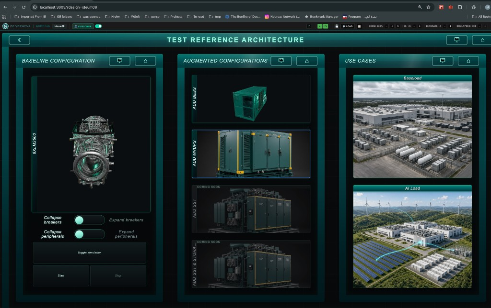

Test Reference Architecture: buttons, JSON, and the four Maingear plots
Source of the JSON: CAD_Driver/rscad-driver-svc/src/ws_client/run_streaming_scenario.py. The comments that contain the word HMI are the messages Roberto marked for these buttons. The socket is ws://192.168.50.1:8008/ws/stream_model.
Where the curves go. The Ideum touch table only sends commands. Roberto’s server answers on that same socket, so the meter numbers first arrive in the Ideum browser. The four plots are drawn on the Maingear, on the p2r_chil design, in the CXC four-screen layout. They are not drawn on the Ideum, and they are not drawn in the Malta view.
Pressing these architecture buttons on the Maingear opens p2r_chil across the four CXC screens. That is the page that shows the graphs. There is no maltaView on that machine.
On the dev laptop the same press opens one window that stands in for the wall:
Use that URL to see p2r_chil while coding. The graphs still belong to the CXC Maingear four-screen view of p2r_chil, not to the Malta wall (?maltaView=wall is only how the laptop fakes one wall screen).
The screen
This is the Ideum page ?design=ideum08, Test Reference Architecture. Only the labeled controls below talk to RSCAD. Collapse / Expand breakers, Collapse / Expand peripherals, and Toggle simulation are the existing wall controls. They do not send Roberto’s JSON. Add SST and Add SST & storage are not in this script.

One fact that changes the design
No reconfiguration button owns its own graph. Start opens four plots, and they stay those four plots for the whole demo. Baseload, AI Load, Add BESS, and Add MVUPS only flip switches inside the running case. You watch the same curves change shape.
The plant on screen is the same 200 MW story: eight LM2500s (two groups of four) feeding a data-center load. Baseline means those eight turbines and the load only. No battery, no MVUPS.
1. Sequence to press
Every message after Start must carry the id from the Start reply. Stop ends that id. The next Start opens a new socket and returns a new id.
Start (left column). Sends start_message. Before the case runs, Topology is 0 (MVUPS off) and AI_load is 0 (constant baseload). The reply is {"status":"start","id":"..."}. Save that id. Streaming begins, and all four Maingear plots start moving. For the demo, start this before the audience arrives and let the baseload settle. Abu asked for on the order of 100 seconds of settle before AI load. Roberto’s test script only waits 5 seconds; that wait is not the demo.
AI Load (right column, lower picture). Sends connect_ai_load_message. The load stops being flat and becomes a spiky profile, and the megawatts rise. The four plots keep going; the shape changes after a short pause while RSCAD applies the switch.
Baseload (right column, upper picture), any time you want the flat load back. Sends tunr_off_ai_load_message (that spelling is in the file). AI_load returns to 0. There is no separate “disconnect” besides this.
Add BESS (middle column, top). Sends connect_bess_message. Four actions in one message: de-block both battery stacks, then close both onto the grid. Do this before Add MVUPS. The demo does not disconnect the battery. A disconnect message exists in the file and has no button.
Add MVUPS (middle column, second tile). Sends connect_mvups_message. Inside that one message the order is AI_load off, Topology on, AI_load on. Topology is the series MVUPS switch. MVUPS sits in series between the generators and the load. After it is in, generator-side voltage should look cleaner than load-side voltage.
Stop (left column, next to Start). Sends stop_simulation_message. The case stops and the socket closes. Everything is disconnected. Start again for a new id.
Spoken order of the plant, once Start is already running on baseload: AI Load, then Add BESS, then Add MVUPS. Baseload is the way back to the flat load. You can show Baseload and AI Load on the eight turbines alone, before either augmented tile.
2. The four graphs on the Maingear
X is the same on every plot: Time (s). Abu’s written table does not rename the X axis, so this stays the label from the recording. Do not plot Simtime. Start a counter at 0 when Start succeeds, and add 0.1 for each meter message (that is streaming_interval). A set_config pauses the stream for a couple of seconds while RSCAD runs a subtask. Keep adding 0.1 only when a sample actually arrives.
Ranges from Abu, confirmed by Parth (18 Oct, 6:47 PM). Voltage is 0.8–1.2. The words on the charts are for the audience. The meter names stay in the code.
Drawer cell
Title on the chart
Y axis
Range
Signal
Top left
Data center load
Load demand (megawatts)
50–150
P_UPS_LOAD
Top right
One generator
Output of one generator (megawatts)
0–30
PMAC
Bottom left
Grid frequency
Frequency (hertz)
55–65
W / (2π)
Bottom right
Voltage
Voltage compared with normal
0.8–1.2
LoadSideV_rms_pu behind, VGB on top. Legend: “At the data center”, “At the generators”.
Top left means the top-left cell of configuration #3, the 2×2 drawer on the right two screens of p2r_chil. It is not the top-left screen of the wall. X on every chart is Time (seconds).
Y label Load Demand (MW), fixed from 50 to 150. X label Time (s). Flat while Baseload is on (the left part of the line). Spiky after AI Load.Y label LM#1 Generator Power (MW), fixed from 0 to 30. X label Time (s). This is PMAC, the first LM. It moves when the load steps and when BESS or MVUPS comes online. It is always this one trace.Y label Frequency (Hz), fixed from 55 to 65. X label Time (s). Plot W / (2π), not the raw meter. 60 Hz sits in the middle. The meter name stays W.Y label Voltage (PU), fixed from 0.8 to 1.2. X label Time (s). One chart, two colors. Draw LoadSideV_rms_pu first and call it “Load side”. Draw VGB after it, on top, and call it “Generator side”. After Add MVUPS, generator side should be the cleaner line. Both sit near 1, inside this window.
What each curve is for
Meter in the JSON
Plot
Why it is on the wall
P_UPS_LOAD
Load Demand (MW), Y 50–150, X Time (s)
This is the data-center load the eight turbines are feeding. Baseload is a steady demand. AI Load is the jumpy profile. You see the plant working harder when that button is pressed.
PMAC
LM#1 Generator Power (MW), Y 0–30, X Time (s)
Power from the first LM, meter PMAC. It should move with the load, and again when the battery and the MVUPS join.
W → Hz
Frequency (Hz), Y 55–65, X Time (s)
Grid frequency. Divide the streamed number by 2π. Held near 60 Hz means the machines are holding speed while the load and the extra equipment change.
LoadSideV_rms_pu and VGB
Voltage (PU), Y 0.8–1.2, X Time (s), one chart
Load-side voltage versus generator-side voltage. The point of MVUPS in this demo is that the generator side stays cleaner than the load side once the series UPS is in.
Also streamed, and not plotted: Q_UPS_LOAD, Vgridrms, BESS1_MW_scale, BESS2_MW_scale, Simtime. Leave them in the Start output list so the capture stays complete. Do not put Simtime on an axis.
3. Each button, the JSON, and what the plots do
Replace 0000000 with the id from Start. The Ideum already does that for Start and Stop. The server is on the Maingear; the Ideum must not open localhost:8008.
Left column Start
Opens the case CDC_LM8unit_2BESS_MVUPS, forces the baseline switches, and chooses which meters come back. Topology 0 means the MVUPS path is off. AI_load 0 means the constant baseload, not the AI profile. This is the only message that both starts the case and defines the output list. After the id comes back, meter objects with no status field arrive about 10 times a second. That is when the Maingear draws all four plots.
Variable in the script: start_message. The same two switches are also in initial_start_message, commented HMI reset to baseline. That second object is a set_config for a case that is already running. This screen has no separate reset button. Start already applies that baseline before run.
Puts the running case back on the constant data-center load. AI_load goes to 0. On the wall, load demand should settle toward a flat line inside 50–150 MW, and the generator trace should calm down with it. Frequency should stay near 60 Hz. Script comment: HMI baseload button message. Variable: tunr_off_ai_load_message.
Closes the AI_load switch. The load is no longer a constant baseload; it is the spiky profile. Load demand on the top-left screen is the curve that should show that. The meeting called this “connect AI load”. The file does not put the letters HMI on this object; Baseload is the one explicitly marked. This is still the message for the AI Load picture.
Brings both battery blocks onto the grid while the case is running. One press sends four steps: ST2DBlk and ST1DBlk to 1 (de-block), then BESS1OnGrid and BESS2OnGrid to 1. You should see the generator and load traces move as the batteries pick up part of the step. Do this before Add MVUPS. Script comment: HMI - Use this to connect bess. Variable: connect_bess_message. The header comment in the file says BESS2OnGrid = 2; the JSON that actually gets sent uses position 1. Send the JSON.
Inserts the medium-voltage UPS in series. The message is three ordered steps, not one switch: turn AI_load off, set Topology to 1, turn AI_load back on. Topology is the MVUPS. After this, on the voltage plot, keep VGB (generator side) drawn on top of load-side voltage so the cleaner generator trace stays visible. Press Add BESS first. Script comment: HMI - connect mvups. Variable: connect_mvups_message.
Stops that simulation id and closes the socket. The plots stop. The next Start is a new socket and a new id. There is no HMI comment on this object; the meeting assigned it to the Stop button.
{
"command": "stop",
"body": {
"id": "<simulation id from Start>"
}
}
Messages in the file with no button on this page
Reset to baseline — initial_start_message
Comment in the file: HMI reset to baseline. Same two switches as Start (Topology 0, AI_load 0), but as set_config on an id that already exists. Use it only if a running case must be put back to eight turbines and baseload without stopping. This page does not have that button. Start already begins in that state.
Comment in the file: HMI use this to disconnect bess, and also “for now, we do not disconnect bess in our demo.” The de-block buttons stay at 1. Only BESS1OnGrid and BESS2OnGrid go to 0. Do not add this button for Monday.
After Start, every tick is one JSON object. Keys are the meter names. Values are numbers. There is no status and no timestamp. The Maingear log line is Sending payload to client: followed by that object. Numbers below are only a shape, not a captured sample.
If W is about 377, then W / (2π) is about 60 Hz and the frequency plot is correct. If a real sample is already near 60, do not divide.
Do we need a debug capture before coding the plots?
Not for the buttons. The JSON to send is already in the script, and Start on the Ideum is already reaching the Maingear.
The Y ranges are locked by Abu’s table, so a capture is no longer needed to choose them. One check is still worth a glance at the server window after Start: W / (2π) should land near 60. If the raw W is already near 60, do not divide. No debug buttons are required for that.
When the EMS-connected model replaces this case, the file name and these component ids change. The button sequence and the four plots stay the same. Send the new ids the same way this script does.